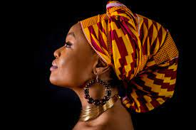
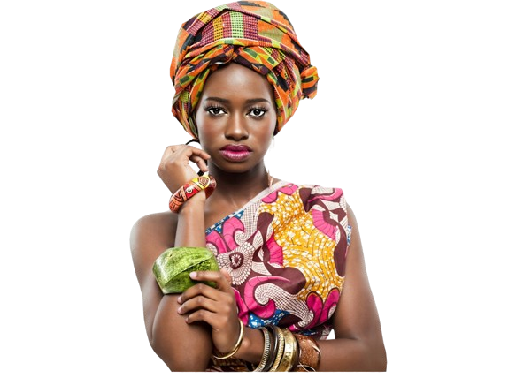
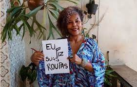
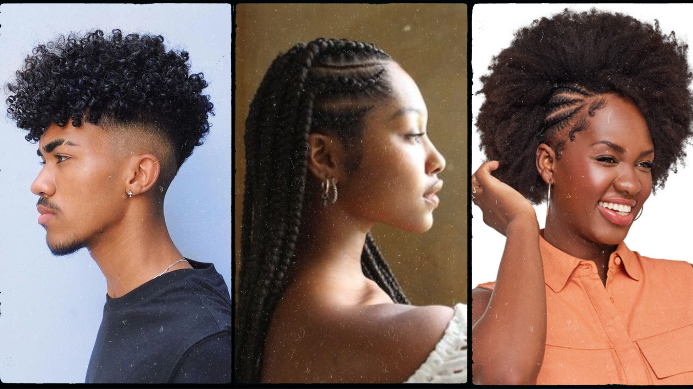
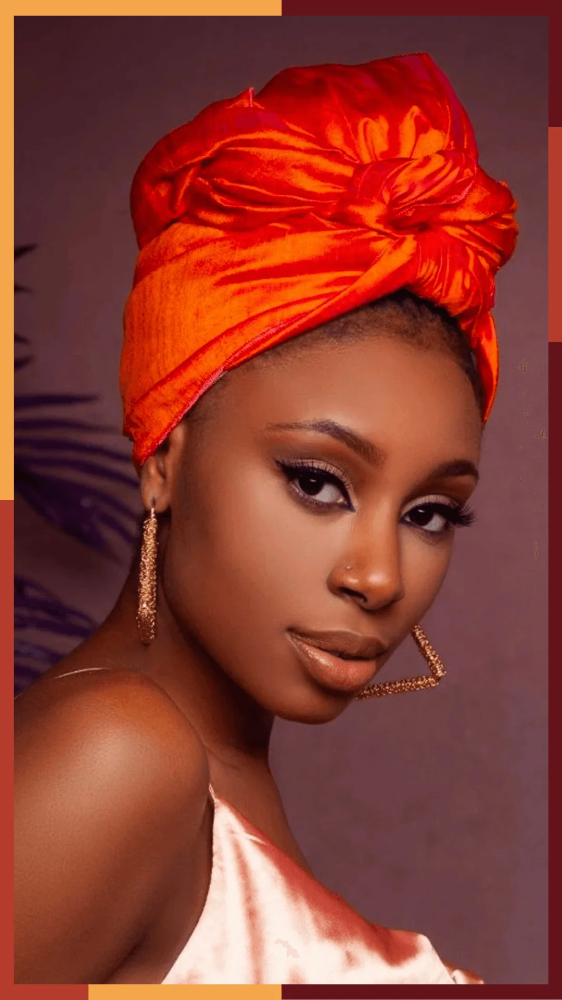
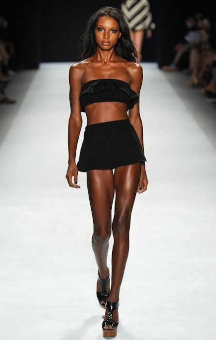
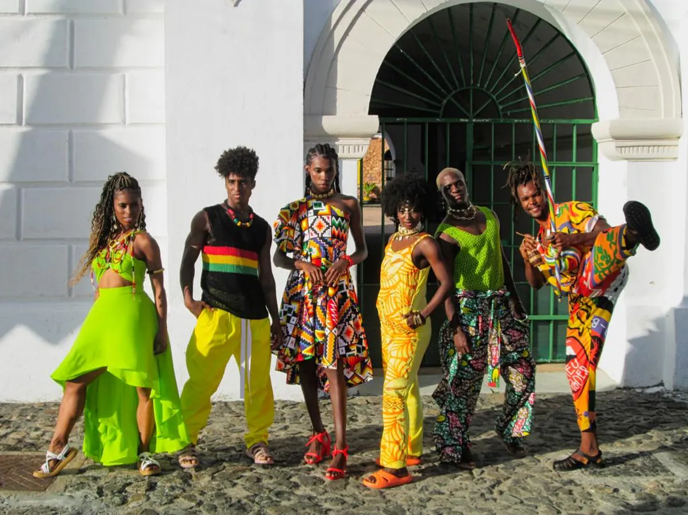

A MODA NA CULTURA AFRO
A moda na cultura afro reflete uma rica expressão de identidade, história e resistência. Com uma diversidade de estilos e influências, a moda afro incorpora elementos tradicionais, como padrões tribais e tecidos autênticos, além de ser uma plataforma para a inovação e a reinterpretação contemporânea.

A moda afro também desempenha um papel crucial na afirmação da identidade negra, desafiando estereótipos e promovendo a aceitação da beleza em todas as suas formas. Além disso, designers afrodescendentes têm ganhado destaque, trazendo uma perspectiva única para as passarelas globais e redefinindo os padrões estéticos convencionais.
As tendências afro na moda muitas vezes estão ligadas à celebração da ancestralidade, utilizando símbolos culturais e cores vibrantes. Há uma valorização crescente da moda sustentável e do comércio justo, com um foco na preservação das tradições e na promoção da equidade dentro da indústria da moda.

A engenheira eletricista Mônica Sampaio, traz o DNA do continente africano, raízes no recôncavo baiano e ancestralidade da mulher negra em diáspora, desde 2015, que se tornaram peças referência da estética afro-brasileira.

CROQUI: O que é?
Um croqui de moda é um esboço ou desenho rápido que representa uma ideia inicial de um designer de moda para um traje ou coleção. Esse tipo de desenho é frequentemente caracterizado por linhas esboçadas de forma livre e não detalhadas, capturando a silhueta geral, proporções e estilo pretendidos da peça de roupa. Os croquis de moda servem como um ponto de partida para desenvolver e comunicar conceitos de design, permitindo que os designers expressem suas ideias visualmente antes de criar as peças reais. Eles são uma ferramenta valiosa no processo criativo da moda, ajudando a visualizar e comunicar o design e a estética desejados.

Visual na cultura afro
A cultura dos cabelos afro é uma expressão rica e diversificada que reflete a herança, identidade e estilo de indivíduos com cabelos naturalmente crespos, cacheados ou encaracolados, com origens africanas. Essa cultura abrange uma variedade de estilos, técnicas de cuidado capilar e significados simbólicos. Ao longo dos anos, a aceitação e celebração dos cabelos afro têm crescido, desafiando padrões de beleza eurocêntricos.
Muitas pessoas afrodescendentes optam por manter seus cabelos em sua forma natural, promovendo a aceitação e o orgulho de suas raízes culturais. Tranças, twists, penteados afro e outros estilos criativos são comuns, destacando a versatilidade e a expressão pessoal dentro da cultura dos cabelos afro.

Além da estética, a cultura dos cabelos afro também está intrinsecamente ligada à resistência e empoderamento. Ela representa uma afirmação de identidade, rejeitando normas que historicamente promoveram a descaracterização dos cabelos afro.
Movimentos sociais têm contribuído para a aceitação e valorização desses cabelos, promovendo uma maior compreensão e respeito pela diversidade capilar.

A elegância da negritude: Como a cultura de inspiração afro transforma a moda
Na interseção entre cultura, identidade e estilo, a influência da negritude na moda emerge como uma força poderosa, redefinindo padrões estéticos, celebrando a diversidade e dando voz a uma narrativa há muito negligenciada. Desde suas raízes ancestrais até suas manifestações contemporâneas, a negritude inspira designers, influencia tendências e desafia os paradigmas do que é considerado belo e relevante no mundo da moda.
A história da moda negra remonta a séculos de tradições ricas e variadas, permeadas por influências africanas que ecoam através do tempo. De tecidos vibrantes a padrões geométricos e adornos intrincados, elementos como o batik, o bogolan e o kente são tesouros culturais que encontram expressão nos desenhos contemporâneos de estilistas renomados.
A negritude na moda desafia os estereótipos de beleza ao celebrar a diversidade de corpos e tons de pele. Movimentos como o "body positivity" e o "inclusivity" ganham força à medida que marcas e criadores reconhecem a importância de representar uma gama mais ampla de formas e tamanhos. Modelos negros desfilam nas passarelas internacionais, trazendo consigo uma mensagem de empoderamento e aceitação.

Do "afro chic" ao "streetwear", a negritude infunde uma nova vida nos clássicos da moda, reinterpretando ícones como o terninho, o vestido tubinho e a camisa branca com uma estética contemporânea e afrocentrada. Estilistas emergentes trazem uma perspectiva única, mesclando elementos tradicionais com uma sensibilidade moderna, criando assim um estilo distinto e reconhecível.
Resistência e empoderamento
Para muitos, a moda é mais do que uma simples expressão estética - é uma forma de resistência e empoderamento. Marcas afrocentradas emergem como plataformas para narrativas de justiça social, conscientização e orgulho cultural. Através de estampas políticas, slogans provocativos e colaborações com causas sociais, essas marcas não apenas vestem corpos, mas também alimentam mentes e inspiram mudanças.
